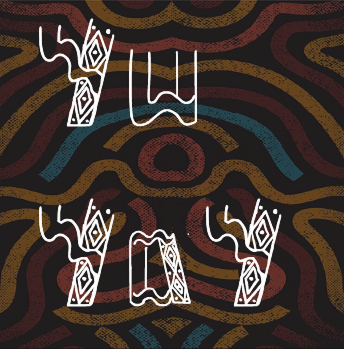

YUYAY es un proyecto de diseño tipográfico enfocado en la creación de una fuente original inspirada en la cultura ecuatoriana. Su diseño toma como referencia los bordados y la vestimenta de los pueblos indígenas, combinándolos con formas que evocan las siluetas de las altas montañas de la cordillera de los Andes.